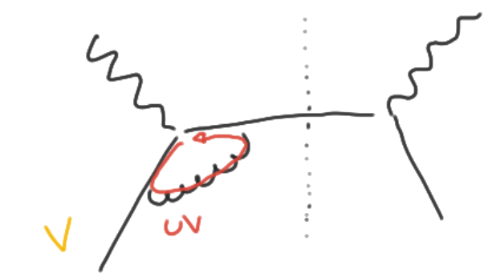
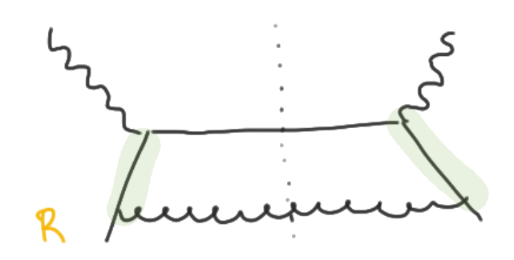
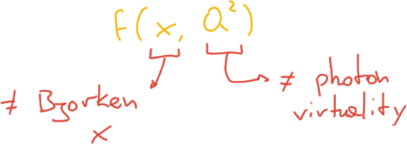
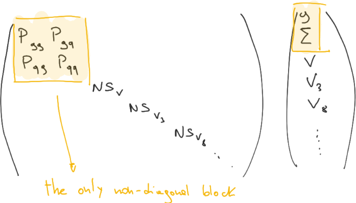

Parton Distribution Functions
theory
November 2020
## Outline <div style="display: flex; margin: auto; width: max-content;"> <div> <ol> <li style="margin: 1em;">NLO divergences <ul> <li>collinear singularities</li> <li>factorization theorem</li> </ul> </li> <li style="margin: 1em;">DGLAP equations </li> </ol> </div> <div> <ol start="3"> <li style="margin: 1em;">Solving evolution <ul> <li>x-space: APFEL</li> <li>Mellin transform</li> <li>Evolution basis</li> <li>N-space: EKO</li> </ul> </li> </ol> </div> </div>
# QFT divergences <p style="text-align: center; font-size: 1em"> a quick primer </p>
## NLO divergences In perturbative QFT the naïve calculations are affected by divergences at NLO. However they come in different kinds: <div style="display: flex"> <div style="display: flex; flex-direction: column"> <div style="height: 4em; margin:0.3em">  </div> <p style="text-align: center">ultraviolet (UV)</p> </div> <div style="display: flex; flex-direction: column"> <div style="height: 4em; margin:0.3em"> <img src="assets/soft-real-sing.png" alt="soft singular diagram" > </div> <p style="text-align: center">soft</p> </div> <div style="display: flex; flex-direction: column"> <div style="height: 4em; margin:0.3em">  </div> <p style="text-align: center">collinear</p> </div> </div>
### UV divergences: ## Renormalization The ultraviolet divergences are of course not physical, indeed: - as Wilson stated all the theories are defined up to their own scale $$ Z = \int^\Lambda \mathcal{D}\phi ~ \exp[-\mathcal{L}(\phi)] $$ - thus the Lagrangian parameter (like charges and masses) are also scale-dependent $$ \alpha \equiv \alpha(\Lambda) \qquad m_e \equiv m_e(\Lambda) $$ @--- ### Why UV divergencies? Not considering the scale dependence of parameters is like looking for the regime $\Lambda \to \infty$, in which the scale is flushed away. But if the theory is only valid up to a finite scale, then forcing this limit will produce divergent quantities. <p style="text-align: center"> The <strong>path integral</strong> is a clean framework to examine this problem </p> <p style="margin-top: 1.5em; font-style: italic"> Another way of considering this issue is that the naïve expansion is done in the <u>wrong parameter</u>, and thus it's not perturbative, and even not well defined when the limit is taken. </p> @--- ### Practical solution The **renormalization** procedure then consist in doing the naïve calculation, but keeping a regulator (many kinds available). Once the regulated calculation is available, it will become clean which classes of parameters are suitable to define our perturbative expansion: <p style="text-align: center"> those who free the theory from divergences </p> <div style="font-size: 80%; margin-top: 1em"> <h6 style="text-align: left; text-transform: none; font-size: 1.5em"> Renormalization schemes </h6> <p style="font-style: italic"> There won't be a single good one, defining which one to choose is exactly the goal of <strong>renormalization scheme</strong>, and it is an <u>arbitrary choice</u> (that have to be kept consistent through all the calculations). </p> </div>
### Soft divergences: ## real-virtual cancellation Nor the soft bremsstrahlung neither the pure virtual correction may be observed separately. <div style="display: flex; justify-content: space-around;"> <img src="assets/soft-real-sing.png" style="margin:0; width: 8em;" alt="soft"> <img src="assets/soft-virt-sing.png" style="margin:0; width: 8em;" alt="virtual"> </div> For this reason they always comes in pair: _when the photon it's soft cannot be so much off-shell_. <p style="font-size: 0.62em; margin-top: -0.5em"> so in the soft limit a real photon it's not so different from a virtual one </p> @--- ## Theorem There is a theorem, by _Block_ and _Nordsieck_ for QED, than generalized to SM by _Kinoshita_, _Lee_, and _Nauenberg_ (**KLN** theorem), that proves: <p style="text-align: center"> the cancellation of soft divergences between real and virtual contributions to all orders in pQFT </p> <div style="font-size: 0.8em; margin-top: 1.5em"> <h5 style="font-size: 1.3em"> The necessity for an IR cutoff </h5> All the physical observable should be cutoff in the IR anyway. Indeed the **number** of soft radiated photons in a collision is divergent even in the classical EM theory. But the energy emitted by photons below a given frequency it's still a finite quantity. </div>
### Collinear divergences: ## non-perturbative physics In this case the divergences would be always regulated by the masses of the fermions, but there is a problem: **asymptotic freedom**. Since **QCD** has an high enough number of colors ($ 3 \sim \infty$) it is an asymptotic free theory, and becomes non-perturbative in IR. But since the mass of $u$, $d$, and $s$ lie below $\Lambda_{QCD}$ they **are** in non-perturbative regime, and so the calculation of the collinear cannot be performed perturbatively. <p style="text-align: right; font-style: italic;"> But we control a non-perturbative object... </p>
# Factorization schemes
## Factorization The non-perturbative ingredient that we have in our processes is precisely the proton structure. So our **hadronic** cross-sections, $\sigma_h$, will always be computed using the perturbatively computed **partonic**, $\sigma_i$, but also the non-perturbative information $f_i$. $$ \sigma_h = \sum_i f_i \otimes \hat{\sigma}_i $$ <p style="font-style: italic"> The ingredient $f_i$ is actually an <strong>universal</strong> object, that does not depend on the specific process. </p>
## Renormalized PDF Analogously to what is done in UV renormalization, we can redefine our PDF in order to account for all the non-perturbative behavior. <p style="font-size: 0.6em; margin: 0; text-align: center"> Even if in principle here it would not be wrong to use the naïve object. </p> Indeed, since they are non-perturbative quantities, the PDF may be considered as parameters in our perturbative calculations. <div style="font-style: italic; text-align: left"> <p style="font-size: 0.6em; margin-bottom: 0.2em"> The PDFs are not parameters, they may be computed as Operator Matrix Elements, but their determination is currently done only by experimental data. </p> <p style="font-size: 0.5em; margin: 0"> In the next future it is possible that we'll have a PDF determination on the <strong>lattice</strong>. </p> </div>
## Factorization Scheme The redefinition it's done in such a way that the divergences in $\hat{\sigma}_0$ are absorbed by $f_0$. <div class="fact-formula" style="font-size: 0.8em; margin:0.1em"> $$ \sigma_h = \sum_i f_{i, 0} \otimes \hat{\sigma}_{i, 0} = \sum_i f_i^{\mathcal{F}} \otimes \hat{\sigma}_i^{\mathcal{F}} $$ </div> <p style="margin-top: 0"> The arbitrariness in the redefinition of the finite part is the content of the <strong>factorization scheme</strong> $\mathcal{F}$. </p>
## PDF after LO The PDF $f_i(z)$ at LO were actually defined as: <p style="text-align: center; font-style: italic"> the probability distribution of the component $i$ of the proton to carry a momentum fraction $z$ </p> But after including the further non-perturbative contribution coming from the collinear divergences (essentially adding them) they have been treated as regular functions, so they are <em>no longer probabilities</em>. <div style="font-size: 0.8em"> <h5 style="text-align: left; margin-bottom: 0.1em">Self-promotion</h5> <p style="margin: 0"> Actually in a recent work by S. Forte, F. Hekhorn and me, it has been proved that PDF are still positive objects in some physically and computationally relevant <strong>factorization schemes</strong> even after the LO. </p> </div>
# Evolution
## Collinear contributions We have included the collinear contributions into the PDF, but so: <p style="font-style: italic; text-align: center"> we are allowing proton constituents to mutate into each other with the Feynman vertices </p> <img src="assets/collinear-proton.png" alt="collinear proton" style="height: 6em; margin: 0"> In particular we are looking only to collinear part, so everything the splits non-collinearly it's then lost in our proton definition. <p style="font-size: 0.6em; margin: 0"> it's not included in the PDF, so it'll be considered as a part of the hard process, it is the <em>ISR</em> </p>
## Splitting structure So we are interested in how the splitting modifies the structure we are initially given. A single splitting diagram may look like: <img src="assets/splitting.png" alt="splitting" style="height: 6em; margin: 0"> _Again:_ pay attention that only the collinear part of this diagram it's contributing to the redefinition of the structure, i.e. only the region where $k^\mu \simeq \alpha p^\mu$ is involved.
## Splitting functions This contributions are then the divergent (+ finite, according to $\mathcal{F}$) part we computed in our diagrams. Until it is regulated in any way this object may still be computed in the <em>regular perturbation theory</em>. <div style="display: flex"> <img src="assets/splitting-functions.png" alt="splitting functions" style="width: 65%; margin: 0"> <div style="display: flex; flex-direction: column; justify-content: center"> <p> They are the so called: </p> <p style="text-align: center"> <strong><em>Altarelli-Parisi</em> splitting functions</strong>. </p> </div> </div>
## Factorization scale Because of our redefinition of the PDF they acquire an extra dependency on an unphysical scale, the **factorization scale** $\mu_F$: $$ f_i(z, \mu_F^2) $$ <p style="font-size: 0.6em"> Notice that instead the PDFs at LO <em>scales</em>, they are scale independent. </p> <h4 style="text-align: left; font-size: 0.9em"> Disclaimer </h4> <p style="font-size: 0.7em"> <em>Historically</em> the PDFs <strong>coincided</strong> with the DIS structure functions (the hard cross-section is $\propto \delta(1-z)$), but the QCD corrections spoil this relation, so: </p> 
## Evolution From the _splitting functions_ we can obtain the probability of a collinear splitting, that is: $$ \frac{\alpha_s}{2\pi}\frac{\text{d}\mu_F^2}{\mu_F^2}P_{ij}(z) $$ this is exactly the contribution for a parton to mutate into another one, and so: $$ f_i(z, \mu_F^2 + \text{d}\mu_F^2) = \left[ \left( \mathbb{I} + \frac{\alpha_s}{2\pi}\frac{\text{d}\mu_F^2}{\mu_F^2}P_{ij}(z) \right) \otimes f_j \right](z, \mu_F^2) $$
## DGLAP equation Finally we obtained our DGLAP evolution equation: $$ \frac{\partial}{\partial \log\mu_F^2} f_i(z, \mu_F^2) = \left[ \frac{\alpha_s}{2\pi} P_{ij}(z) \otimes f_j \right](z, \mu_F^2) $$ <img src="assets/hadronic-event.png" alt="hadron incoming" style="height: 40%; margin: 0"> @--- ## DGLAP and Unphysical scale A cleaner way of obtaining the DGLAP equation is to derive the factorization formula by $\frac{\partial}{\partial \log\mu_F^2}$. Indeed the **physical observables** (like DIS structure functions, or any kind of hadronic cross sections) **do not depend on the unphysical scale** $\mu_F^2$, while the dependence in the ingredients has been introduced by our redefinition, reshuffling bits from the partonic cross section to the PDF. This procedure it's similar to what is done to obtain the _Callan-Symanzik_ equation, in the context of UV renormalization.
# Solving DGLAP
## DGLAP analytic structure Let's explicit the meaning of the convolution in DGLAP: $$ \frac{\partial}{\partial \log\mu_F^2}f(z, \mu_F^2) = \sum_j \int_z^1 \frac{\text{d}y}{y} P_{ij}(z/y) \otimes f_j(y, \mu_F^2) $$ <p style="font-size: 0.6em"> Notice that there is not anymore explicit dependence on $\alpha_s$ since it has been included in the <em>all-orders</em> splitting functions: $$ P_{ij} = \sum_{n=1}^\infty \alpha_s^n P_{ij}^{(n)} $$ Indeed at LO (no QCD corrections) no splitting it's possible. </p>
## $x$-space solution The DGLAP equaation it's an integro-differential equation in 2 dimensions. A possible way of solving this equations is to exploit a numerical integration for both the dimensions, and evolve a given initial condition. This is called $x$-space solution in contrast to what we'll see in a while, and it is the approach followed by evolution libraries like `HOPPET` and: <div style="display: flex; justify-content: space-around"> <img src="assets/apfel.png" alt="apfel" style="width: 40%; object-fit: contain; margin: 0"> </div>
## Mellin Transform The other way to solve the equations is to exploit a common method that is in every physicist's toolbox: the _Fourier Transform_. Actually, the Fourier transform is the perfect tool to decouple _additive_ convolution, but the DGLAP convolution is _multiplicative_ instead, than what? We should simply account for the proper $\log$s here and there, applying instead the **Mellin Transform**: $$ \begin{align} \mathcal{M}\[f\](N) &= \int_0^\infty \text{d} x~ x^{N-1} f(x) = \int_0^\infty \frac{\text{d} x}{x} x^N f(x)\\\\ &= \int_{-\infty}^\infty \text{d}\log x~~ e^{N \log x} f(x) \end{align} $$ @--- ## Exact Mellin-Fourier relation It's not so hard to workout the exact relation between the Fourier and Mellin transform, and it is: $$ \begin{align} \mathcal{M}\[f\](N) &= \mathcal{F}\[f(e^{-x})](-iN)\\\\ \mathcal{F}\[f\](-p) &= \mathcal{M}\[f(e^{-\log x})](-ip)\\\\ \end{align} $$ An intermediate step it's to go through the _Laplace transform_, and it's non-trivial since it requires a **rotation in the complex plane**, that will modify the property of the transformation kernel.
## Mellin convolution Applying the Mellin transform to a _multiplicative convolution_ we find: $$ \begin{align} \mathcal{M}\[f\otimes g\](N) &= \int_0^\infty \text{d}x~ x^{N-1} \int_x^1 \frac{\text{d}y}{y}~ f\left(\frac{x}{y}\right) g(y) \\\\ &= \int_0^1 \text{d}z~ z^{N-1} f(z) \int_0^1 \text{d}y~ y^{N-1} g(y) \\\\ &= \mathcal{M}\[f](N) \cdot \mathcal{M}\[g](N) \end{align} $$ Just using the change of variables $x = yz$. <p style="font-size: 0.6em"> Even if it was not completely obvious in the first place, from here we can deduce that the Mellin convolution is also symmetric. </p>
## Evolution basis The other ingredient extremely useful for decoupling and simplifying the DGLAP it's the choice of a suitable basis, that for this reason is called **evolution basis**. <p style="font-size: 0.6em"> $$ q^\pm = q \pm \bar q $$ </p> <div style="display: flex; justify-content: space-around"> <p style="font-size: 0.5em"> $$ \begin{align} \Sigma &= \sum\limits_{j} q_j^+\\ T_3 &= u^+ - d^+\\ T_8 &= u^+ + d^+ - 2 s^+\\ T_{15} &= u^+ + d^+ + s^+ - 3 c^+\\ T_{24} &= u^+ + d^+ + s^+ + c^+ - 4 b^+\\ T_{35} &= u^+ + d^+ + s^+ + c^+ + b^+ - 5 t^+ \end{align} $$ </p> <p style="font-size: 0.5em"> $$ \begin{align} V &= \sum\limits_{j} q_j^-\\ V_3 &= u^- - d^-\\ V_8 &= u^- + d^- - 2 s^-\\ V_{15} &= u^- + d^- + s^- - 3 c^-\\ V_{24} &= u^- + d^- + s^- + c^- - 4 b^-\\ V_{35} &= u^- + d^- + s^- + c^- + b^- - 5 t^-\\ \end{align} $$ </p> </div>
## $P_{ij} \to$ Evolution basis The key role of the evolution basis it's to diagonalize the splitting functions:  The reason is that the massless QCD is flavour symmetric, in particular _gluon_ is not able to distinguish between flavors, so it mixes only with the most symmetric combination, the **singlet** $\Sigma$.
## $N$-space solution Finally, the solution steps are the following: 1. transform to evolution $N$-space $$ \frac{\partial}{\partial \log\mu_F^2}\tilde{f}(\mu_F^2) = - \gamma (a_s)\cdot\tilde{f}(\mu_F^2) $$ 2. change $\mu_F^2$ dependence into $a_s = \alpha_s / 4\pi$ dependence $$ \frac{\text{d}}{\text{d}a_s} \tilde{f}(a_s) = \frac{\text{d}\log\mu_F^2}{\text{d}a_s} \cdot \frac{\partial}{\partial \log\mu_F^2}\tilde{f} = - \frac{\gamma(a_s)}{\beta(a_s)} \cdot \tilde{f}(a_s) $$ 3. rotate to evolution basis @--- ## The final step Once in the evolution basis the equation is mostly a trivial first-order differential equation of the species: $$ \frac{\text{d}}{\text{d}x} f(x) = \alpha(x)f(x) $$ whose solution is just the exponential of an integral. Sometimes the integral can be performed exactly, some other times (further perturbative orders) it has to be integrated numerically. <h5 style="font-size: 0.8em; text-align: left">Singlet sector</h5> For the $\Sigma-g$ sector a further diagonalization is required, and this time it strongly depends on the splitting functions $P_{ij}$.
## What's the magic? Seems like we _avoided_ the computation of an integral, but it is still hidden in the result: we are still in $N$-space, but to go back an **inverse transform** it's still needed, and it will involve a complex contour integration. $$ \mathcal{M}^{-1}\[\tilde{f}\](x) = \frac{1}{2\pi i} \int_{\mathcal{C}} x^{-N} \tilde{f}(N) \text{d}N $$ But actually few of them are needed, because of the diagonalized shape of $P_{ij}$.
## EKO The $N$-space strategy has already been implemented by the code `PEGASUS` and it is going to be implemented in <p style="font-size: 0.7em"> The goal of this library will be to compute the Evolution Operators for a generic PDF, exploiting a Lagrange interpolation to pre-compute it. </p> <p style="font-size: 0.5em; margin-bottom: 0.2em"> At the end of the day the PDF are always interpolated when saved, for example in the <code>LHAPDF</code> format. </p> <p style="font-size: 0.5em; margin: 0"> The only other way would be keep the fitting parametrization, for example the <strong>Neural Network</strong>... </p>